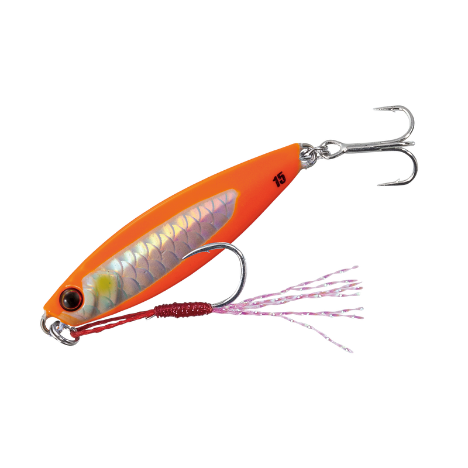
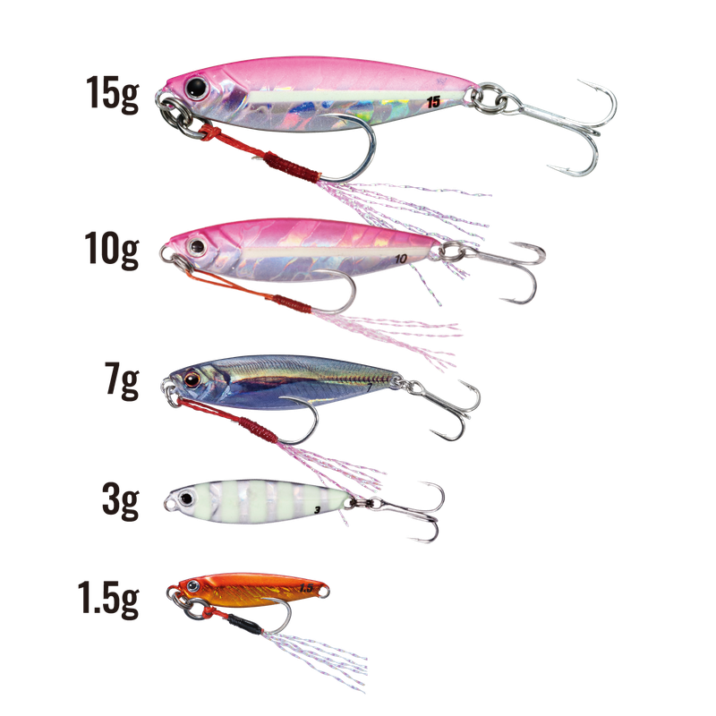
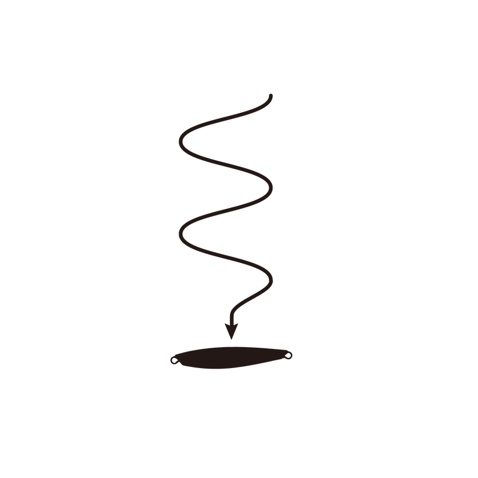
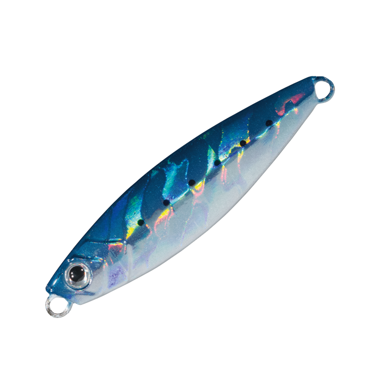
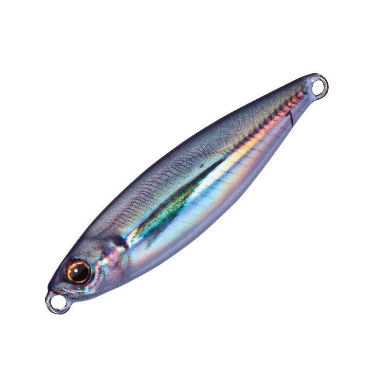
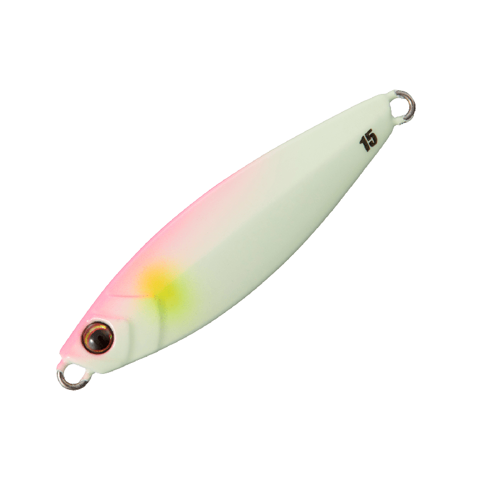
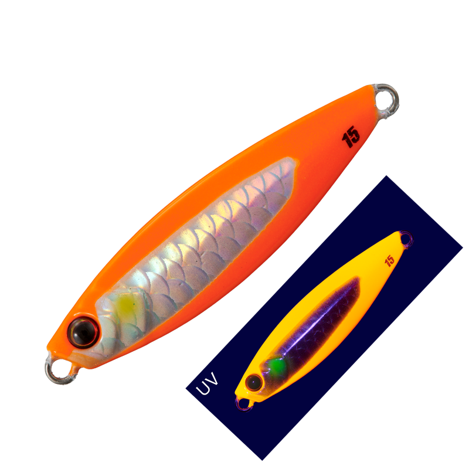
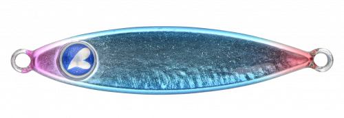
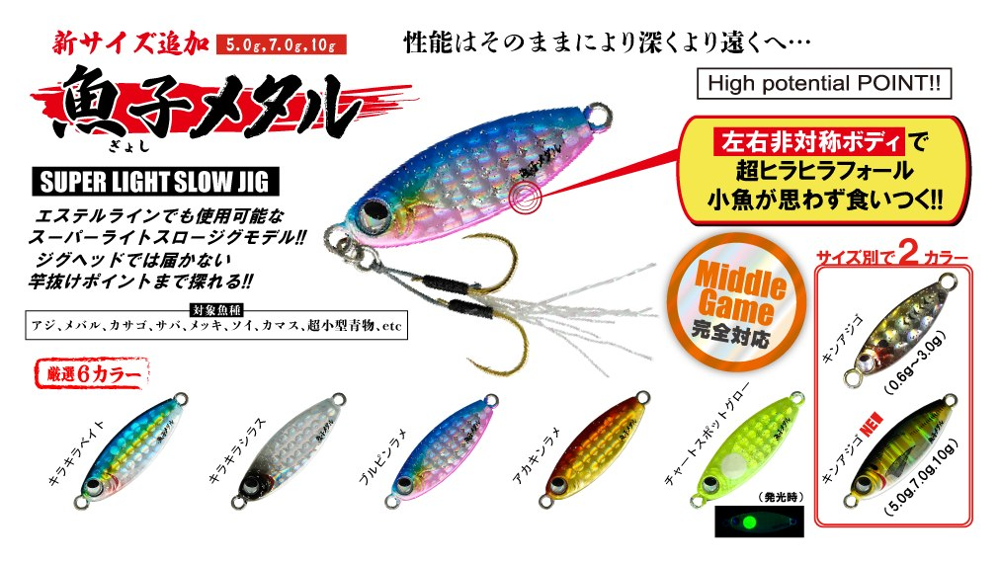

ジグパラ マイクロ
ジグパラ マイクロは、メジャークラフトの人気メタルジグ「ジグパラ」シリーズのマイクロジグです。キャッチコピーは「かつてないジャークの軽さ！触れれば即掛け！スーパーライトゲーム専用ジグ」。
ワイドなボディ形状でゆっくりした誘いにも対応でき、メバルや根魚の攻略に最適なのが最大の特徴。1.5gから15gまでそろっていて、アジ・メバル・サバ・カマス・カサゴなど、堤防の小さな魚を手軽に狙えます。

画像出典:メジャークラフト公式HP
スペック
- メーカー
- メジャークラフト（Major Craft）
- タイプ
- マイクロジグ（ワイド形状）
- 重さ
- 1.5g・3g・5g・7g・10g・15g
- フック
- 3g・5g：リアトレブル／7g・10g：フロント＆リア
- コーティング
- 5層マルチレイヤーコーティング
- カラー
- 全22色（サイズによりラインナップが異なる）
- ターゲット
- アジ・メバル・サゴシ・サバ・メッキ・カマス・タチウオ・シーバス・カサゴ・ソイなど
- 価格
- オープン価格
▼今すぐチェック

ジグパラ マイクロの特徴
スーパーライトゲーム専用のマイクロジグ
-
ワイド形状でスローな誘いに対応
幅のあるボディで、ゆっくりした誘いやフォールでもしっかり見せられる。スリムなジグに比べておとなしいナチュラルなフォールで、スレた魚にも口を使わせやすい。
-
割れ・はがれに強いコーティングと職人製フック
割れやはがれに非常に強い「5層マルチレイヤーコーティング」を採用。フックは刺さりと貫通性能にこだわった日本の職人製オリジナルで、3g・5gは動きを重視したリアトレブル、7g・10gはフロントとリアにセットしている。
-
生きた小魚のようなライブベイトカラー
イワシ・アジ・サバ・キビナゴを再現したライブベイトカラーには、マヅメ時や光の届きにくいボトム付近で効果のある「ケイムラ」塗装をほどこしている。
ジグパラ マイクロの使い方
キャストしたら底まで沈め、軽いジャークで跳ね上げてからフォールさせるのが基本です。ジャークのあとはラインを張りすぎず、ナチュラルに落としてフォール中のアタリを取ると、触れただけのバイトも掛けやすくなります。
アジやメバルは表層〜中層、カサゴやソイなどの根魚は底付近と、狙う魚に合わせてレンジを変えましょう。ただ巻きでも使えるので、サバやカマス、メッキなど回遊する魚には巻きで探るのも効果的です。


画像出典:メジャークラフト公式HP
ジグパラ マイクロの得意な状況
堤防から小さな魚を数多く釣りたい時や、ワームに反応がない時に出番です。
小さなシルエットとおとなしいフォールで、スレた魚や時合いが過ぎたあとでも口を使わせやすいのが強み。メバルや根魚狙いのスローな誘いから、サバ・カマスなど回遊魚の巻きまで、1つのルアーで五目釣りが楽しめます。
ワンポイント
マヅメ時や水深のあるボトム付近など、光が届きにくい場面ではケイムラのライブベイトカラーやグローカラーに替えるのがおすすめ。日中はシルバー系やエッジ系のカラーと使い分けると、同じ場所でも反応が変わることがあります。
重さの使い分け
| 重さ | 使い分けの目安 |
|---|---|
| 1.5g | アジング・メバリングのロッドで扱いやすい軽さ。足元や近くのアジ・メバルに |
| 3g | ライトゲームの基本の重さ。表層〜中層をゆっくり探りたい時に |
| 5g | 少し沖を狙いたい時や、風が出てきた時に |
| 7g | 遠投して広く探りたい時や、カマス・サバなど回遊魚に |
| 10g | 水深のある場所や潮の速い場所の根魚、遠くのナブラに |
| 15g | さらに飛距離が欲しい時や、深場のボトムを取りたい時に |
重さはメジャークラフト公式HPの記載より（価格はオープン価格）。使い分けの目安は、使うロッドや水深・潮の速さで変わります。
人気カラー
ジグパラ マイクロの人気カラーを紹介します。

ケイムライワシイワシカラーに紫外線で光るケイムラ。小さなベイトを追っている時の1本目に。

ライブ アジ（ケイムラ）生きたアジを再現したライブベイトカラー。アジやメバル、根魚が小アジを食べている時に。

ピンクグロー光を蓄えて光るグロー。夜釣りや濁り潮、暗い時間帯のアピールに。

エッジオレンジシルバー2026年10月に追加された新色。シルエットを小さく見せるマイクロパターン向けのカラー。
※カラーはサイズによってラインナップが異なります。
画像出典:メジャークラフト公式HP
▼今すぐチェック
ジグパラ マイクロに似ているルアー
-

シーライドミニ ブルーブルー 詳細はこちら＞止めて落とすだけの微振動フォールのマイクロジグ。フォールで食わせたい時に比べたい。
-

魚子メタル ルーディーズ 詳細はこちら＞ヒラヒラ落ちるスーパーライトスロージグ。ライトゲームの定番マイクロジグ。
-
 ジグパラショート
メジャークラフト
詳細はこちら＞
ジグパラショート
メジャークラフト
詳細はこちら＞
同じジグパラの定番ショアジギングジグ。青物も狙う重めのジグなら。